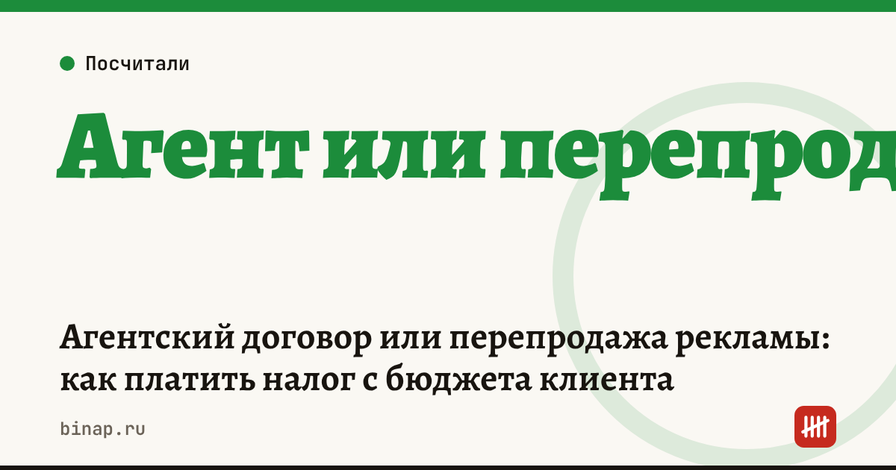

Агентский договор или перепродажа рекламы: налог с бюджета клиента

Если рекламное агентство на УСН «доходы» покупает рекламу от своего имени и перепродаёт клиенту, доходом считается весь бюджет, который прошёл через счёт. Если агентство работает по агентскому договору, деньги клиента на рекламу — не доход агентства, налог платят только с вознаграждения (пп. 9 п. 1 ст. 251 НК). На одних и тех же цифрах разница в налоге может быть в три раза.
Коротко
- Перепродажа: агентство продаёт рекламу как свою услугу — доход равен всей сумме от клиента.
- Агентская схема: агентство действует в интересах клиента (ст. 1005 ГК), бюджет — транзит, доход — вознаграждение.
- На УСН «доходы» разница в налоге прямая: 6% со всего бюджета или 6% с вознаграждения.
- Агентская схема требует документов: договор, отчёт агента, подтверждение расходов на рекламу за клиента.
- Схему выбирают при подписании договора — переделать задним числом нельзя.
Сроки, изменения и разборы для ИП и самозанятых — каждое утро в Telegram и MAX. Подпишитесь, чтобы не пропустить.
Пример на цифрах
Расчёт редакции, цифры условные. Агентство на УСН «доходы» 6%. Восемь клиентов на ведении по 60 000 ₽ в месяц, через агентство проходит 1 500 000 ₽ рекламного бюджета, комиссия агентства с бюджета — 10%.
| Агентский договор | Перепродажа рекламы | |
|---|---|---|
| Ведение: 8 × 60 000 ₽ | 480 000 ₽ | 480 000 ₽ |
| Комиссия с бюджета 10% | 150 000 ₽ | 150 000 ₽ |
| Рекламный бюджет клиентов | транзит, не доход | 1 500 000 ₽ — доход |
| Доход для УСН | 630 000 ₽ | 2 130 000 ₽ |
| Налог 6% | 37 800 ₽ | 127 800 ₽ |
Разница — 90 000 ₽ в месяц, больше миллиона в год. Сравнить на своих цифрах можно в калькуляторе дохода рекламного агентства, а коротко — в ролике на минуту.
Есть и второй риск: при перепродаже весь бюджет клиентов идёт в лимит доходов на УСН и в порог освобождения от НДС — подробнее в статье порог НДС для УСН.
Что нужно для агентской схемы
- Договор прямо называет его агентским: агентство действует от своего имени или от имени клиента, но за его счёт, и получает вознаграждение.
- Отчёт агента за период: сколько потрачено на рекламу за клиента, какие кабинеты пополнены, какое вознаграждение.
- Документы площадок на расходы: акты, закрывающие документы рекламных систем.
- Разделение в учёте: деньги клиента на рекламу и вознаграждение агентства — отдельными суммами в счёте и платёжке.
Когда перепродажа оправдана
Если клиенту нужна «реклама под ключ» как единая услуга с фиксированной ценой, перепродажа проще. Но тогда посчитайте налог со всей суммы и сравните УСН «доходы» с «доходы минус расходы»: при расходах на рекламу больше 60–70% доходов второй объект может оказаться выгоднее — проверьте в калькуляторе УСН.
Как показать ведение и бюджет клиенту — в статье КП рекламного агентства.
Все материалы — в разделе «Рекламным агентствам».
Частые вопросы
Можно ли поменять перепродажу на агентский договор в середине года? Да, для новых договоров или дополнительным соглашением на будущее. Уже прошедшие по старой схеме деньги останутся доходом.
Кто маркирует рекламу при агентской схеме? Это стороны решают в договоре. Важно прописать, кто передаёт сведения в ОРД.
Нужен ли отчёт агента каждый месяц? Периодичность определяет договор. Для учёта удобнее ежемесячно — так доход агентства и транзит видны сразу.